David
Defensa | Dorsal 4
El número 5 es el animal nocturno por excelencia. Se rumorea que no duerme, simplemente espera a que
abra el siguiente zulo . Su relación con la fiesta es una fuerza de la naturaleza: Es la
reencarnación de Ronaldinho, fútbol y fiesta no se perdería ningún carnaval si por él fuera .
Es un auténtico golfo de los que ya no quedan,en una mano tiene una copa y la otra una samaritana morena. Es de esos que en el campo sudan Ron RECOMPENSA.
En el césped se le considera uno de los motores del equipo, aunque es un motor que funciona exclusivamente con “RECOMPENSA” y falta de sueño. Su despliegue físico es inversamente proporcional a su vida ordenada; organiza el juego como organiza una previa en su casa para acabar en el STARVING.
Sin embargo, su historial de esfuerzo tiene un pequeño asterisco legal. Se dice que su fe de vida laboral es un folio en blanco: ha cotizado exactamente lo mismo que el Dandy de Barcelona. Su mayor contribución a la Seguridad Social ha sido pagar el IVA de las copas EL ES DAVINSON SÁNCHEZ.
Es un auténtico golfo de los que ya no quedan,en una mano tiene una copa y la otra una samaritana morena. Es de esos que en el campo sudan Ron RECOMPENSA.
En el césped se le considera uno de los motores del equipo, aunque es un motor que funciona exclusivamente con “RECOMPENSA” y falta de sueño. Su despliegue físico es inversamente proporcional a su vida ordenada; organiza el juego como organiza una previa en su casa para acabar en el STARVING.
Sin embargo, su historial de esfuerzo tiene un pequeño asterisco legal. Se dice que su fe de vida laboral es un folio en blanco: ha cotizado exactamente lo mismo que el Dandy de Barcelona. Su mayor contribución a la Seguridad Social ha sido pagar el IVA de las copas EL ES DAVINSON SÁNCHEZ.
Galería
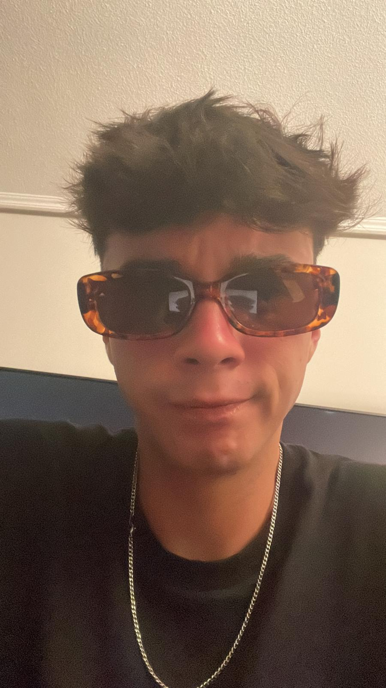
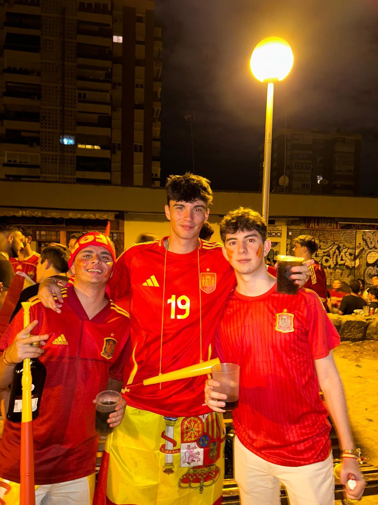
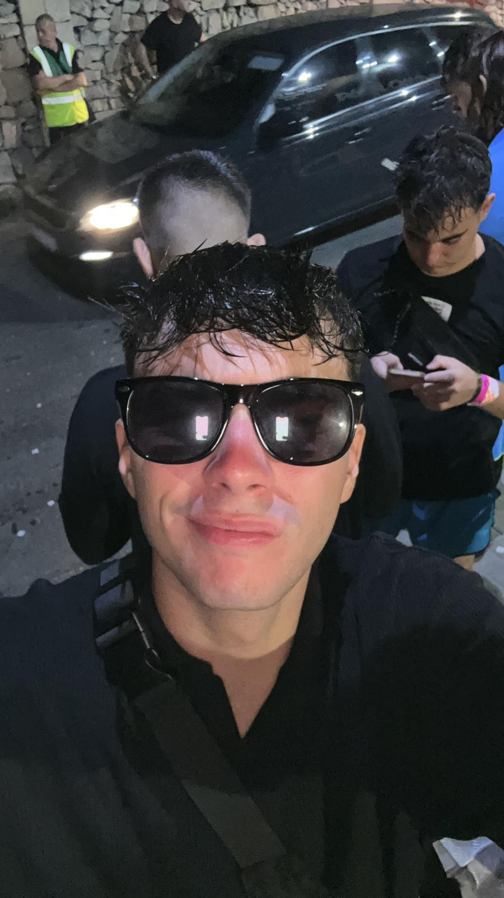
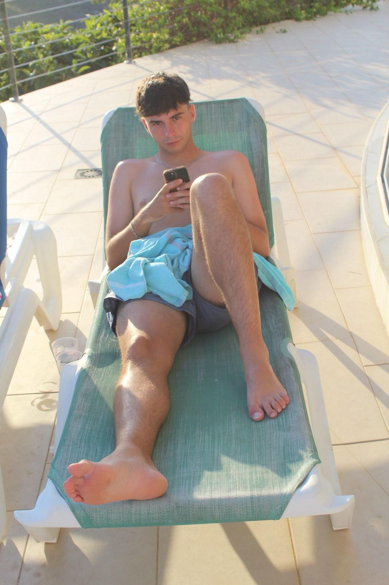
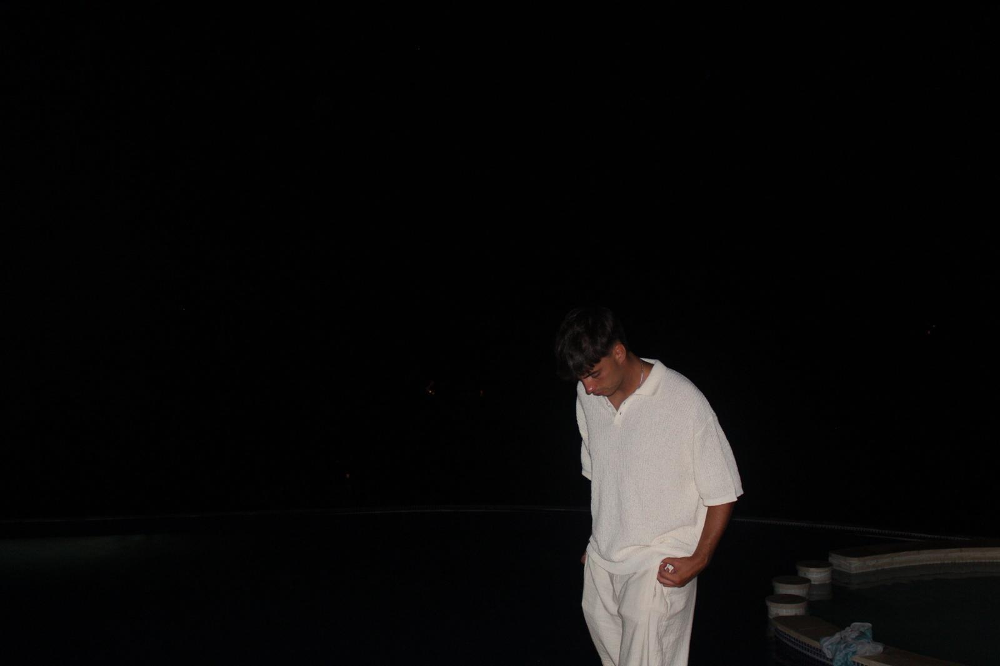
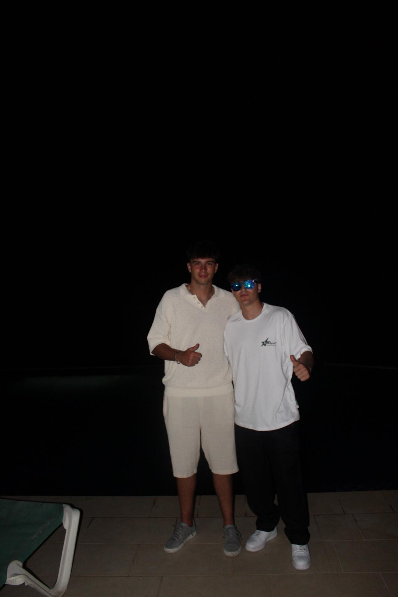
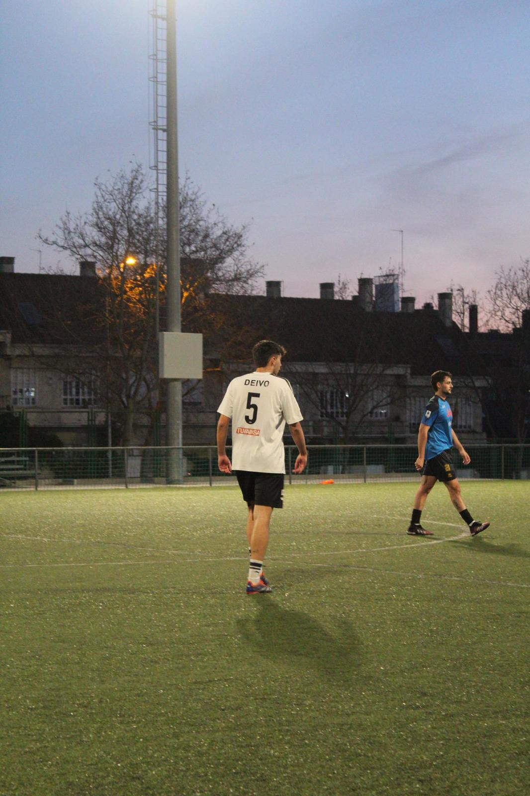
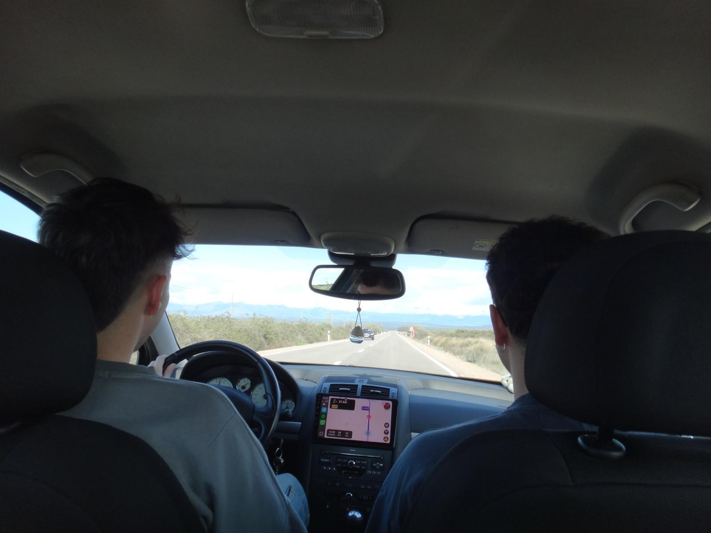
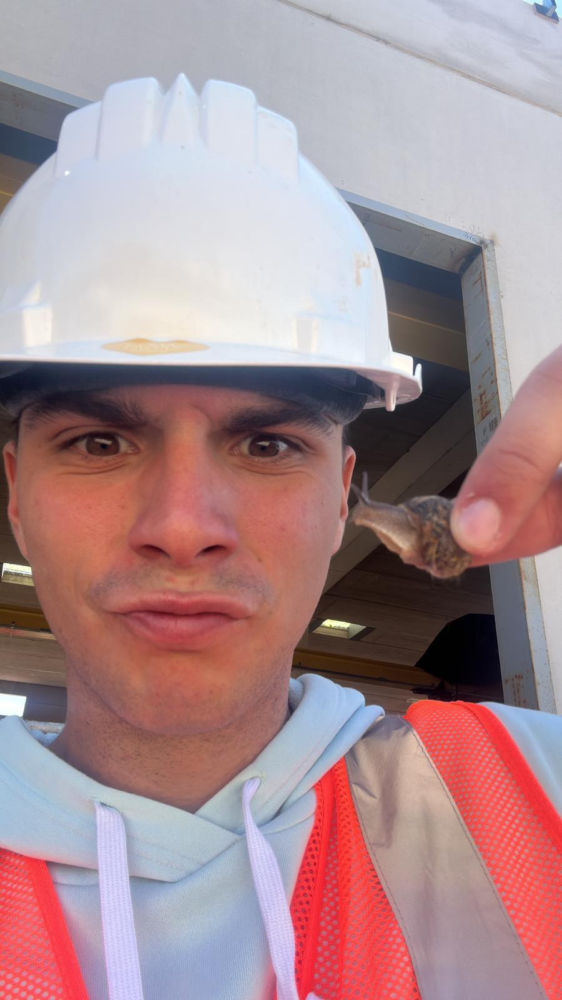
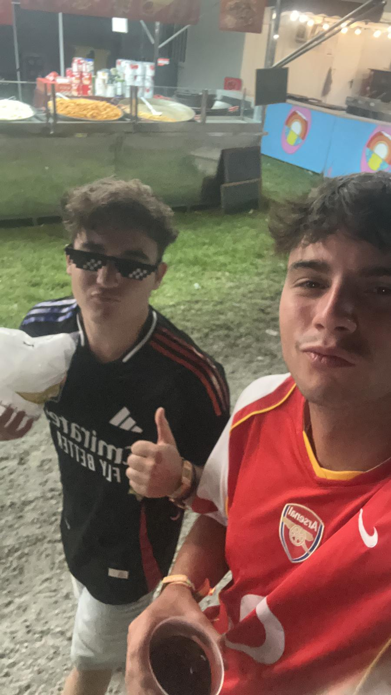
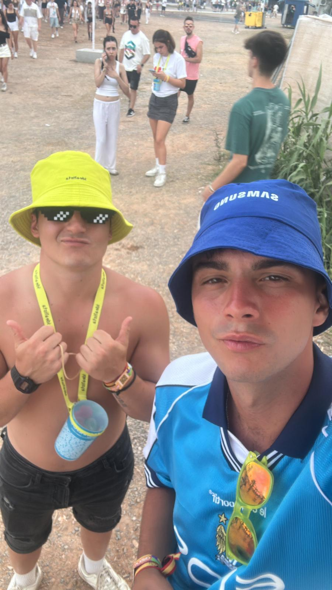
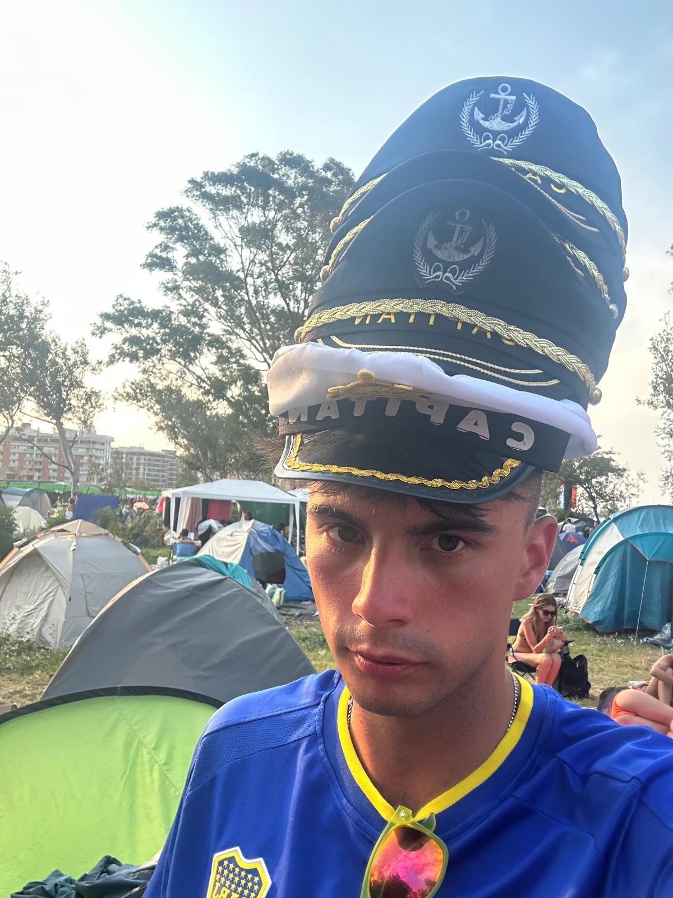
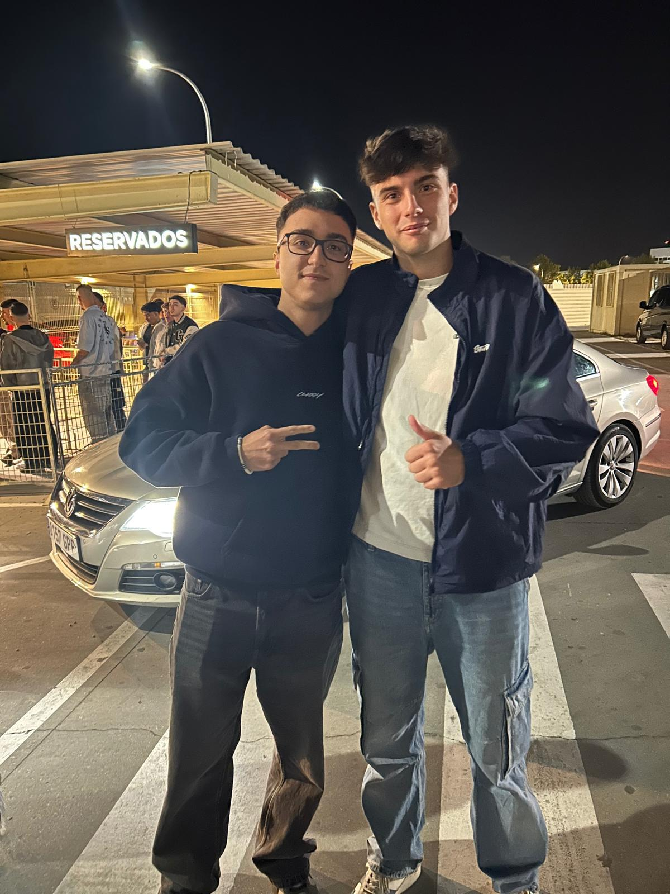